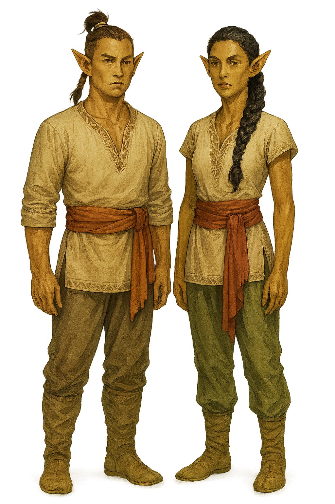

Valenar Elf
Overview
The Valenar elves are descendants of the Tairnadal and have claimed southern Cyre as their war-torn homeland. They emulate ancestral spirits through acts of valor.
Appearance
Valenar elves have golden-brown skin and dark hair, usually worn long or tied back in warrior styles. Their eyes are sharp and often amber or green. They favor practical armor and sashes in ancestral colors.
Culture and Society
Valenar life revolves around the heroic ideal. Elves often select a patron ancestor whose life they strive to reenact through battle, training, and ceremony. Horses are sacred and trusted companions.
Valenar society is military and spiritual. Every elf is trained for war and expected to embody a patron ancestor through actions and deeds. Martial skill is paramount, and deeds of valor are considered sacred rites. Bonds with animals, especially horses, are ceremonial. Their nomadic tribes train and raid together in honor of their honored dead.
Major Settlements
Taer Valaestas is the cultural center of Valenar elves.
Gameplay Traits
- Ability Scores: +2 Dexterity, +1 Strength or Wisdom
- Age: Up to 750 years
- Size: Medium
- Speed: 30 feet
- Darkvision: 60 feet
- Keen Senses: Perception proficiency
- Fey Ancestry: Advantage vs charm; immune to magical sleep
- Mounted Legacy: Land Vehicles proficiency
- Martial Heritage: Proficiency in one martial weapon
- Languages: Common, Elvish